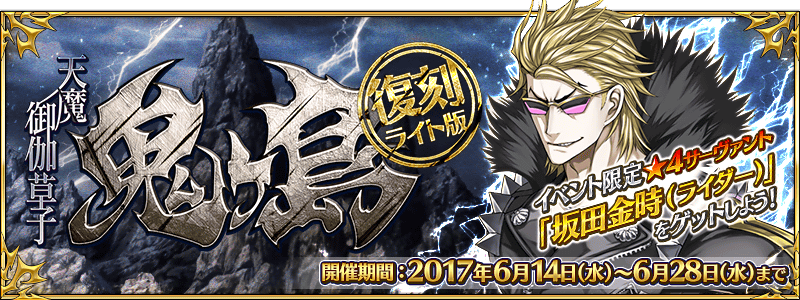

◆活動舉辦期間◆
2017年6月14日(三)17:00～6月28日(三)22:59
◆活動概要◆
舉辦期間限定活動「復刻:天魔御伽草子 鬼島 輕量版」！
「★4(SR)坂田金時(Rider)」將做為活動限定報酬Servant登場！
推進主線關卡、攻略鬼島，入手坂田金時〔Rider〕吧！
在本活動配合主線關卡的進行，會發生與全部的Master一起挑戰強大敵人的討伐特別關卡－討伐戰。
在討伐戰攻擊強大敵人的話，根據給予的傷害量能獲得「傷害點數」。
獲得更多傷害點數，取得坂田金時〔Rider〕專用靈基再臨素材等豪華報酬吧！
另外，也會有只限通過「終局特異點」及「復刻:天魔御伽草子 鬼島 輕量版」全部主線關卡的Master才能參加的挑戰關卡。
※本活動為復刻於2016年舉辦的「天魔御伽草子 鬼島」，調整一部份活動専用道具交換的交換數等變得容易遊玩的「精簡版復刻活動」。
※活動限定Servant「★4(SR)坂田金時(Rider)」及活動限定概念禮裝與2016年舉辦時同様可以獲得。
◆活動参加條件◆
只限通過「特異點F 炎上汙染都市 冬木」的Master才能参加
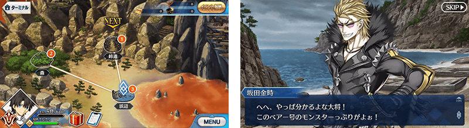
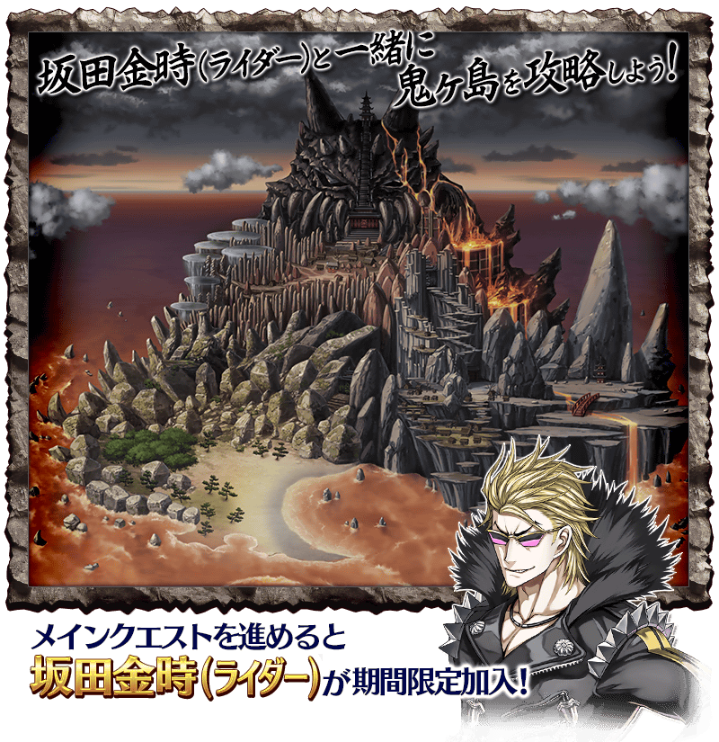
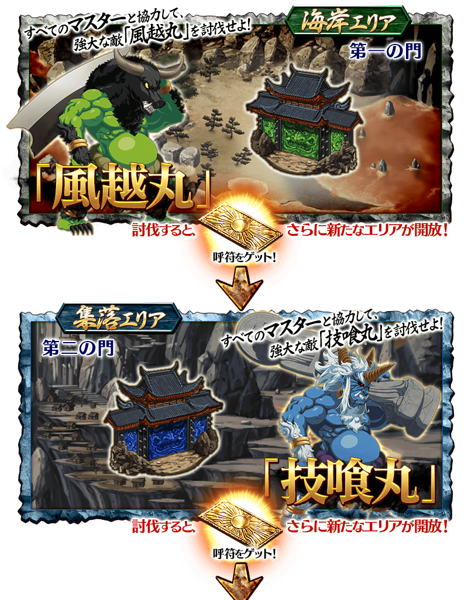
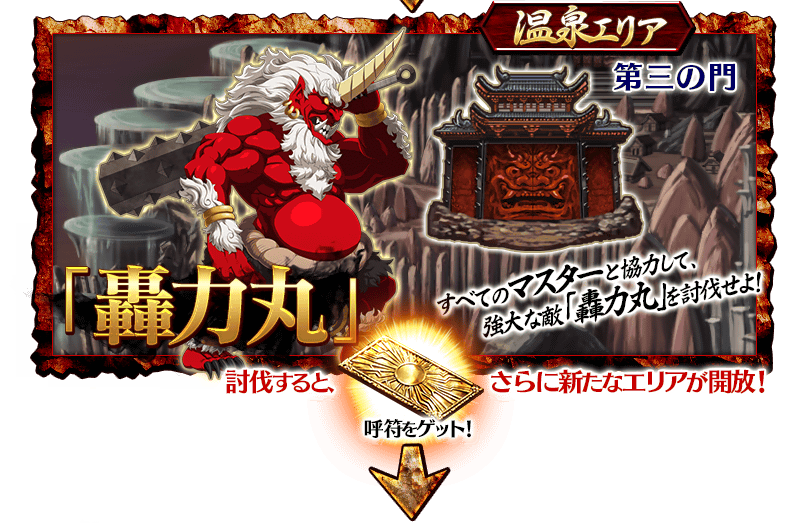
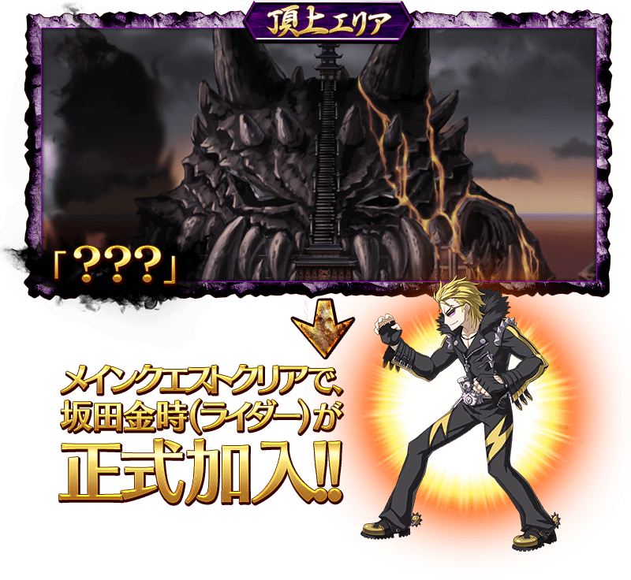
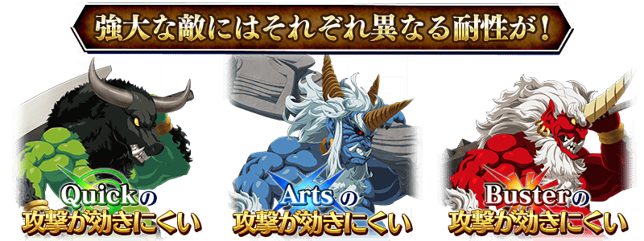
風越丸所持『Quick耐性』的效果 … Quick卡的攻擊性能衰減50％
技喰丸所持『Arts耐性』的效果 … Arts卡的攻擊性能衰減50％
轟力丸所持『Buster耐性』的效果 … Buster卡的攻擊性能衰減50％
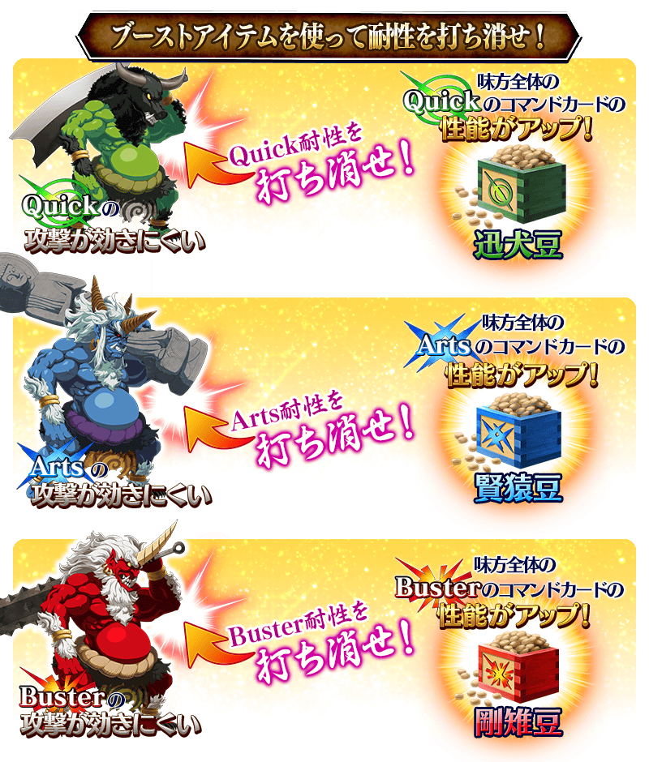
使用『迅犬豆』時的效果 … 在討伐戰中我方全體＜含候補＞的Quick卡性能提升50％
使用『賢猿豆』時的效果 … 在討伐戰中我方全體＜含候補＞的Arts卡性能提升50％
使用『剛雉豆』時的效果 … 在討伐戰中我方全體＜含候補＞的Buster卡性能提升50％
討伐戰的目標是與全部Mastetr一起討伐強大敵人。
在討伐戰中登場的強大敵人，擁有在一次的戰鬥無法擊倒的龐大HP。參加活動藉Master全員攻擊，使之討伐成功吧。
本活動是配合主線關卡的進行發生討伐戰，討伐成功的話會開放下個新主線關卡。
藉Master全員擊倒強大敵人，攻略鬼島吧！
※另外，直到推進主線關卡讓坂田金時〔Rider〕正式加入以後，緊接著，會發生以傷害點數報酬的獲得做為目標的討伐戰。
※根據活動參加時機的不同，會有著不出現討伐戰的情況。該情況對主線關卡的進行和報酬的獲得等沒有影響。
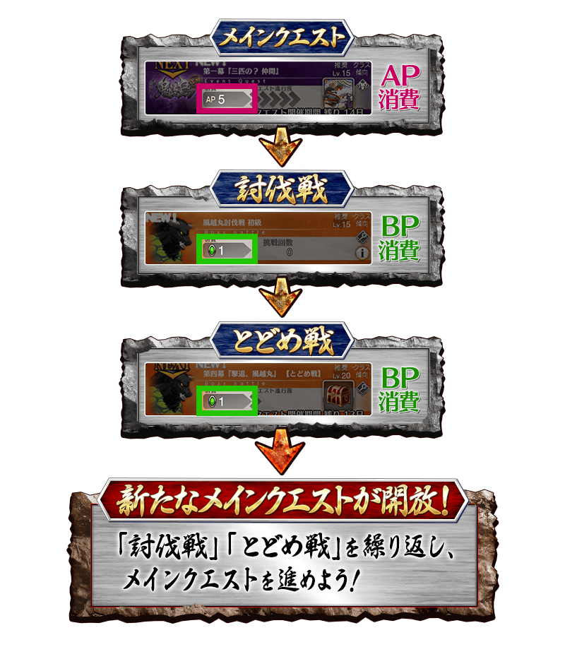
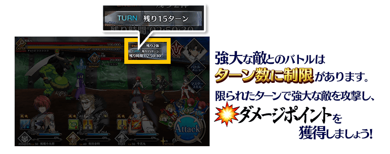
敗北時，也會依照給予的傷害量加算傷害點數。
還有，戰利品、MasterEXP、魔術禮裝EXP、絆點數也會加算一部份。
※請注意若從戰鬥撤退則不會加算。
討伐戰的實行是消費BP。
BP除了1小時回復1點外，也能使用靠關卡報酬等獲得的「勇気のきびだんご」「ゴールデンきびだんご」回復。
※在使用BP的活動中，活動期間中等級提升時BP會全回復。
等級提升的BP回復量只到最大上限為止，超過最大上限的份量不會反映。
還有，藉道具回復超過BP最大上限的情況，就算是等級提升也會加算BP，請注意使用BP的活動之間不會進行BP的繼承。※(6/14追記)
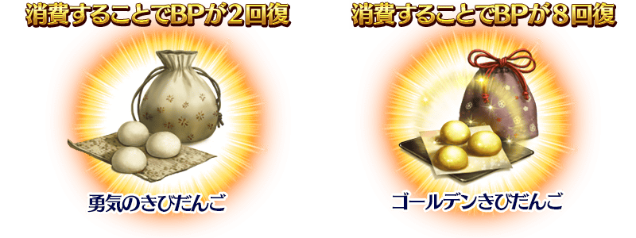
◆討伐戰進行時間表◆
「風越丸」「技喰丸」「轟力丸」強大敵人，在討伐一次以及討伐「？？？」後，會再次登場。
坂田金時〔Rider〕正式加入前，通過各「終結戰(とどめ戦)」後，進行關卡可以馬上挑戰下個討伐戰。
「？？？討伐戦」後追加「繼續戰」，另外討伐戰全部設有舉辦期限。
※「？？？」的討伐成功的話，贈送活動参加者全員「聖晶石 10個」做為撃破報酬！
※「聖晶石 10個」在「？？？」撃破後再度進行登入時送至禮物箱。
| 舉辦期限 | 終結戰報酬 | |
|---|---|---|
| 風越丸討伐戦 | 6月14日(三)17:00 ～ | 呼符×1、賢猿豆×1 |
| 技喰丸討伐戦 | 風越丸討伐後 ～ | 呼符×1、剛雉豆×1 |
| 轟力丸討伐戦 | 技喰丸討伐後 ～ | 呼符×1、迅犬豆×1、賢猿豆×1、剛雉豆×1 |
| ？？？討伐戦 | 轟力丸討伐後 ～ 6月19日(一) 22:59 |
坂田金時(Rider)正式加入 |
| 再来！ 風越丸討伐戦 | 6月19日(一) 23:00 ～ 6月22日(四) 22:59 |
呼符 ×1 |
| 再来！ 技喰丸討伐戦 | 6月22日(四) 23:00 ～ 6月25日(日) 22:59 |
呼符 ×1 |
| 再来！ 轟力丸討伐戦 | 6月25日(日) 23:00 ～ 6月28日(三) 22:59 |
呼符 ×1 |
※各討伐戰舉辦期限結束後也可以挑戰「終結戰」。
※在「？？？」終結戰的初次通過時可入手聖杯做為通過報酬。
於2016年舉辦時獲得「聖杯」的情況，在輕量版復刻活動會以「伝承結晶」代替聖杯做為通過報酬。
◆報酬獲得方法◆
當每次傷害點數到達一定數以上，在關卡結束時，會自動進行報酬獲得。
可以獲得的報酬清單，能從在管理室(ターミナル)出現的按鈕的「活動報酬畫面」選擇「傷害點數報酬確認」做確認。
◆可用傷害點數獲得的道具◆
| 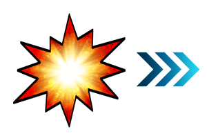 |
【活動限定概念禮裝】 【靈基再臨素材】 【技能強化素材、靈基再臨素材】 【其他道具】 |
※活動専用道具｢ゴールデンきびだんご｣｢勇気のきびだんご｣會在活動道具交換期間結束後消失。
◆超值攻略方法・其1◆
使用靠活動道具交換和關卡報酬等獲得的推進道具「迅犬豆」「賢猿豆」「剛雉豆」的話，在討伐戰中我方全體的「Quick」「Arts」「Buster」各指令卡的效果會提升。
推進道具，在討伐戰關卡開始前，可任意選擇1種類消耗。
所謂『「Quick」攻擊沒什麼效』，強大敵人所持各自的耐性，可以使用此推進道具的抵消。
使用對應耐性的推進道具，挑戰討伐戰吧！
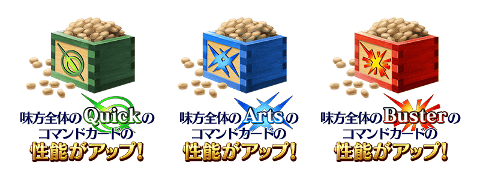
※推進道具的效果對我方全體＜含候補＞都有作用，直到戰鬥結束都會持續。
◆超值攻略方法・其2◆
對象Servant在「復刻:天魔御伽草子 鬼島 輕量版」中的攻擊威力提升！
【對象Servant】
| 職階 | Servant |
|---|---|
| Saber | |
| Archer | |
| Lancer | |
| Rider | |
| Assassin | |
| Caster | |
| Berserker | |
| Ruler |
※各Servant的增加量不同。
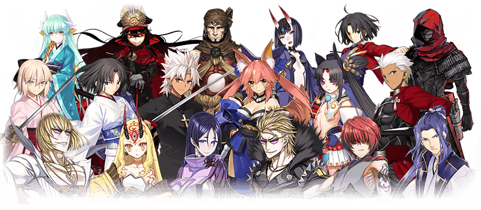
◆超值攻略方法・其3◆
裝備能以活動道具交換和傷害點數報酬入手的活動限定概念禮裝「ゴールデン相撲～岩場所～」的話，自身在「復刻:天魔御伽草子 鬼島 輕量版」中的攻擊威力會提升。
另外，裝備能以傷害點數報酬入手的活動限定概念禮裝「月の湯治」的話，我方全體＜含候補＞在「復刻:天魔御伽草子 鬼島 輕量版」中的攻擊威力會提升。
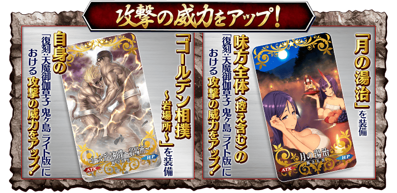
◆超值攻略方法・其4◆
裝備期間限定概念禮服裝的話，活動専用道具「鬼印のつづら」「錦の反物」「竜宮珊瑚」各自的獲得數會提升。
※請注意在各關卡的道具掉落率並非100%
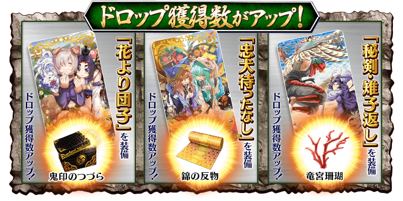
◆超值攻略方法・其5◆
在討伐戰中，與強大敵人的戰鬥在BATTLE開始時，會自動發動特別技能「鬥志」，賦予我方全體＜含候補＞特攻。
推薦等級更高，能得到更高的特攻加成。妥善運用特攻，挑戰高難易度的戰鬥吧！
| 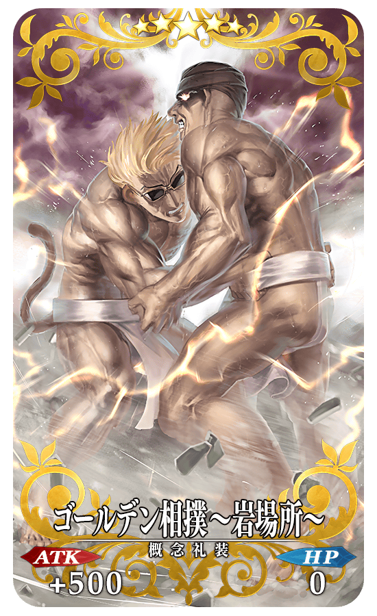 |
★★★★★SSR |
| 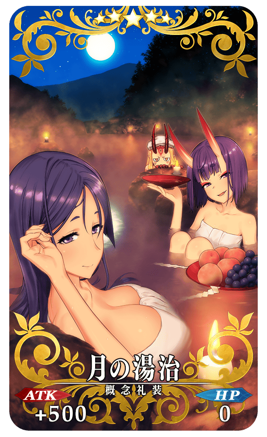 |
★★★★★SSR 月的湯治 ATK 500(最大:2000) HP 0 技能 自身的Critical威力提升20%＆賦予每回合星星3個獲得狀態 ＋ 我方全體＜含候補＞在『復刻:天魔御伽草子 鬼島 輕量版』中的攻擊威力提升50%【『復刻:天魔御伽草子 鬼島 輕量版』活動期間限定】 |
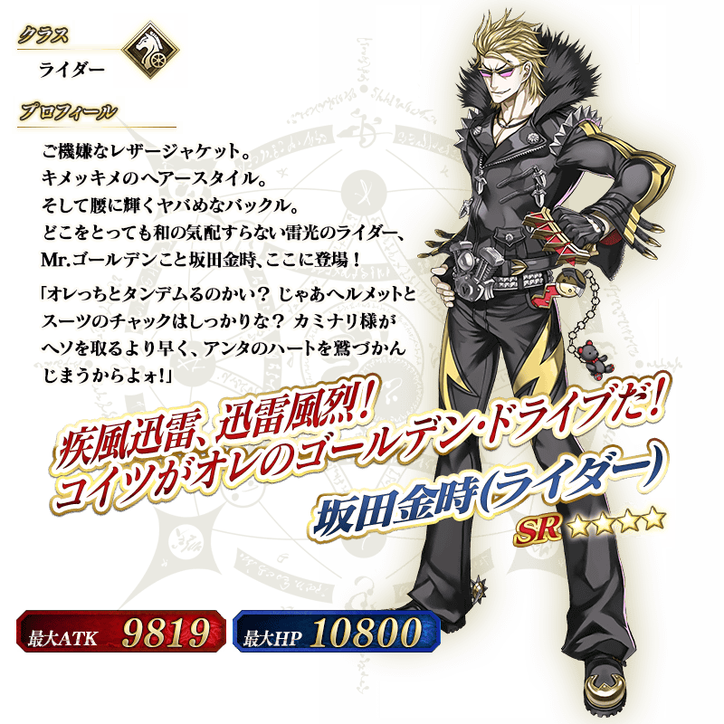
◆靈基再臨◆
使用活動期間中的靠傷害點數報酬外無法入手的「ゴールデンベアライター」，重複4次靈基再臨的話，卡面會有所變化！
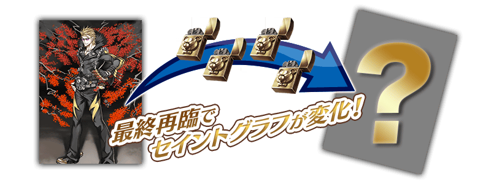
※坂田金時(Rider)不會隨靈基再臨使戰鬥角色的外觀變化。
◆交換方法◆
交換期間：2017年6月14日(三)17:00～7月5日(三)11:59
※交換期間結束後「鬼印のつづら」「錦の反物」「竜宮珊瑚」「勇気のきびだんご」「ゴールデンきびだんご」「迅犬豆」「賢猿豆」「剛雉豆」會消失。
從達文西工房内的「活動道具交換」，用收集來的活動專用道具來交換以下的道具。
◆可用鬼印のつづら交換的道具◆
| 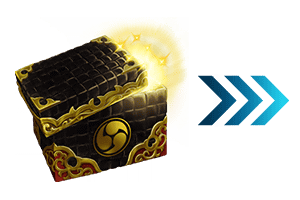 |
【活動限定Servant】
【活動限定概念禮裝】
【技能強化素材、靈基再臨素材】
【靈基再臨素材】
【其他道具】 |
◆可用錦の反物交換的道具◆
| 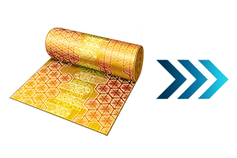 |
【活動限定Servant】
【活動限定概念禮裝】
【技能強化素材、靈基再臨素材】
【靈基再臨素材】
【其他道具】 |
◆可用竜宮珊瑚交換的道具◆
| 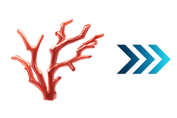 |
【活動限定Servant】
【活動限定概念禮裝】
【技能強化素材、靈基再臨素材】
【其他道具】 |
◆可用勇気のきびだんご、ゴールデンきびだんご交換的道具◆ ※2017年6月29日(四) 23:00 ～ 7月5日(三) 11:59
|
|
◆可用迅犬豆・賢猿豆・剛雉豆交換的道具◆ ※2017年6月29日(四) 23:00 ～ 7月5日(三) 11:59
| 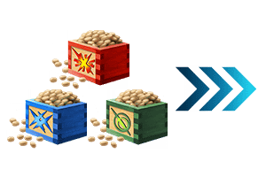 |
|
以通過「終局特異點」及「終局特異點」及「復刻:天魔御伽草子 鬼島 輕量版」全部主線關卡的Master為對象開放高難易度關卡「挑戰關卡」。
通過挑戰關卡時可獲得豪華報酬。
挑戰關卡就算在通過後也不會消失，能無數次挑戦，可以變更Servant和概念禮裝的組合後再次挑戰。
※關卡通過報酬、戰利品、MasterEXP、魔術禮裝EXP、絆點數只限在初次通過時獲得。
◆挑戰關卡参加條件◆
只限通過「終局特異點」及「復刻:天魔御伽草子 鬼島 輕量版」全部主線關卡的Master才能参加
◆挑戰關卡初次通過報酬◆
呼符 1枚

◆「復刻 天魔御伽草子 鬼島Pick Up召喚(每日交替)」期間◆
期間:2017年6月14日(三)17:00～6月28日(三)22:59
以期間限定舉辦「復刻 天魔御伽草子 鬼島Pick Up召喚(每日交替)」！
變更於2016年舉辦的「天魔御伽草子 鬼島Pick Up召喚」一部份内容進行復刻。
「★5(SSR)源頼光」「★5(SSR)坂田金時」以期間限定登場！
本次包含上述共3名對象的Servant以每日交替Pick Up！
對象的★5(SSR)Servant「★5(SSR)源頼光」「★5(SSR)坂田金時」「★5(SSR)玉藻前」出現機率提升！
另外「★4(SR)鈴鹿御前」「★4(SR)Emiya(Archer)」「★4(SR)Emiya〔Alter〕」「★4(SR)Emiya〔Assassin〕」「★3(R)俵藤太」「★3(R)風魔小太郎」常駐Pick Up！
詳情請在聖晶石召喚畫面左下的召喚詳細確認。
※源頼光、坂田金時在Pick Up期間結束後不會追加到故事召喚。
裝備期間限定概念禮裝「「★5(SSR)花より団子」「★4(SR)忠犬待ったなし」「★3(R)秘剣・雉子返し」的話活動專用道具的掉落獲得數會増加。
※「★3(R)秘剣・雉子返し」在Pick Up期間中，也能在友情點數召喚獲得。
Pick Up期間中，期間限定Servant、Pick Up Servant、期間限定概念禮裝的出現機率提升！
10次召喚中確定1張★4(SR)以上和確定1位★3(R)以上的Servant！
※確定★4(SR)以上包含Servant和概念禮裝。
※所謂「出現機率提升」意指比同稀有度的Servant及概念禮裝出現機率更高的設定。
| 每日交替Pick Up期間 | 每日交替Pick Up内容 |
|---|---|
| 6/14(三) 17:00～6/17(六) 22:59 | 源頼光 |
| 6/17(六) 23:00～6/18(日) 22:59 | 玉藻前 |
| 6/18(日) 23:00～6/19(一) 22:59 | 坂田金時 |
| 6/19(一) 23:00～6/20(二) 22:59 | 源頼光、玉藻前、坂田金時 |
| 6/20(二) 23:00～6/21(三) 22:59 | 源頼光 |
| 6/21(三) 23:00～6/22(四) 22:59 | 玉藻前 |
| 6/22(四) 23:00～6/23(五) 22:59 | 坂田金時 |
| 6/23(五) 23:00～6/28(三) 22:59 | 源頼光 |
※請註意會以每日交替變更Pick Up的Servant。
※關於鈴鹿御前、Emiya(Archer)、Emiya〔Alter〕、Emiya〔Assassin〕、俵藤太、風魔小太郎，在本Pick Up期間中為常駐Pick Up的對象。
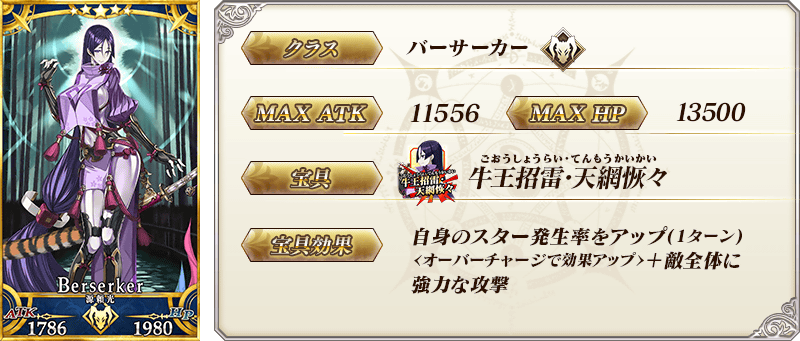

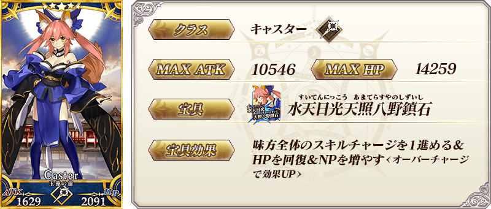
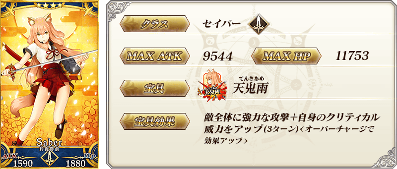

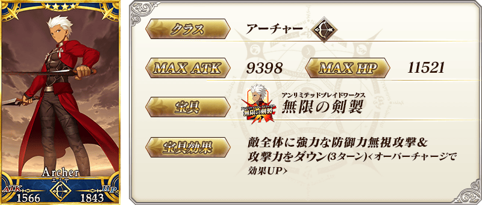


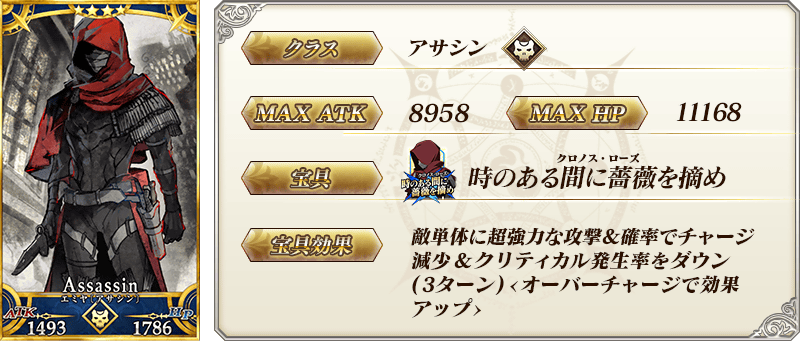
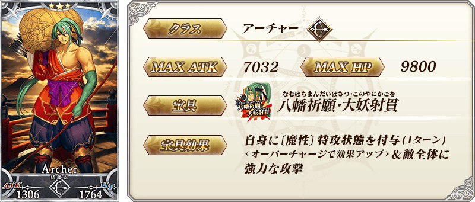

| 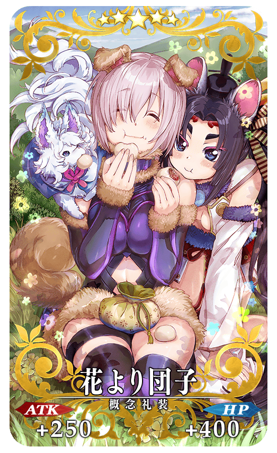 |
★★★★★SSR |
| 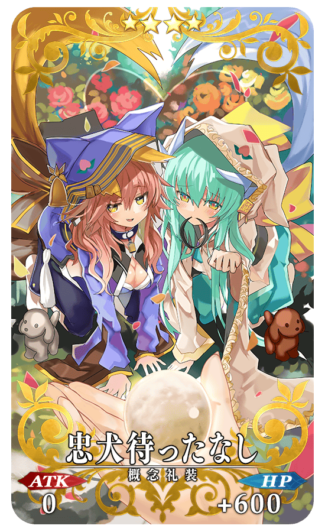 |
★★★★SR |
| 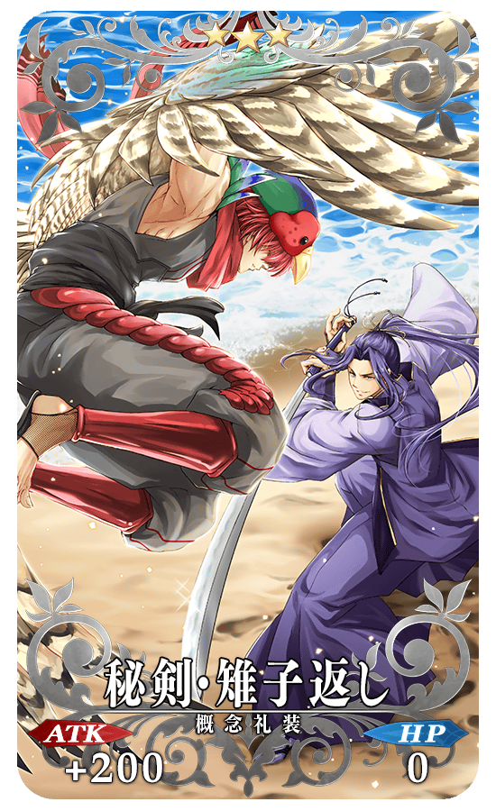 |
★★★R 秘剣・雉子返し ATK 200(最大:1000) HP 0 技能 自身的Quick卡性能提升3%＆Critical威力提升8% ＋ 竜宮珊瑚的掉落獲得數增加1個【『復刻:天魔御伽草子 鬼島 輕量版』活動期間限定】 |
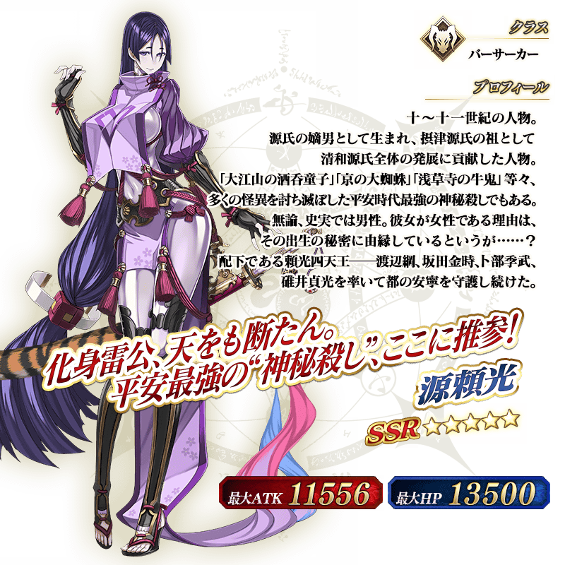
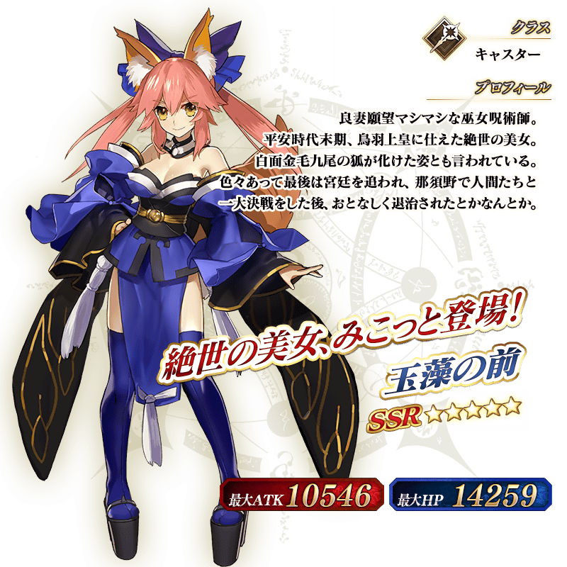

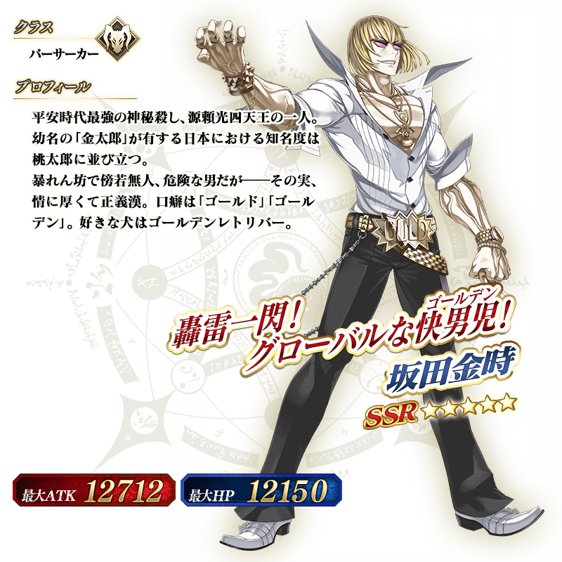